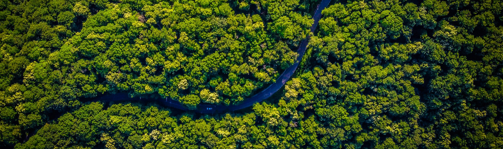

Ecological Toolbox: A short guide for research projects in ecology

Before defining study aims & hypothesis
Betts MG , Hadley AS , Frey DW , et al. When are hypotheses useful in ecology and evolution?. Ecol Evol. 2021; 11: 5762–5776. | link
Popovic, et al. 2024. Four principles for improved statistical ecology. Methods in Ecology and Evolution, 00, 1–16. | link
Book chapter by Gonçalves-Souza, T., Provete, D.B., Garey, M.V., da Silva, F.R., Albuquerque, U.P. (2019). Going Back to Basics: How to Master the Art of Making Scientifically Sound Questions. | link
Before collecting data
Before writing code
Before analyzing data
Define the purpose of your analysis
- Tredennick, A. T., G. Hooker, S. P. Ellner, and P. B. Adler. 2021. A practical guide to selecting models for exploration, inference, and prediction in ecology. Ecology 102(6):e03336. | link
Key papers for avoiding statistical problems
Zuur, A.F., Ieno, E.N. and Elphick, C.S. (2010), A protocol for data exploration to avoid common statistical problems. Methods in Ecology and Evolution, 1: 3-14. | link
Zuur, A.F. and Ieno, E.N. (2016), A protocol for conducting and presenting results of regression-type analyses. Methods Ecol Evol, 7: 636-645. | link
Harrison, X. A., Donaldson, L., Correa-Cano, M. E., Evans, J., Fisher, D. N., Goodwin, C. E. D., Robinson, B. S., Hodgson, D. J., & Inger, R. (2018). A brief introduction to mixed effects modelling and multi-model inference in ecology. PeerJ, 2018(5), 1–32 | link
How to interpret significance / pvalues?
Dushoff J, Kain MP, Bolker BM. I can see clearly now: Reinterpreting statistical significance. Methods Ecol Evol. 2019; 10: 756–759. | link
Blog post by Daniel Lakens: Why p-values should be interpreted as p-values and not as measures of evidence | link
Going further
Data Science for Ecologists - Courses and tutorials from Coding Club | link
Zeleny 2023. Blog: Analysis of community ecology data in R. | link
Before model selection
- C. Sutherland, D. Hare, P. J. Johnson, D. W. Linden, R. A. Montgomery, and E. Droge (2023). Practical advice on variable selection and reporting using Akaike information criterion. Proceedings of the Royal Society B: Biological Sciences, vol. 290, no. 2007, Sep. 2023. | link
Before making figures
Weissgerber, T. L., Milic, N. M., Winham, S. J., & Garovic, V. D. (2015). Beyond Bar and Line Graphs: Time for a New Data Presentation Paradigm. PLOS Biology, 13(4), e1002128 | link
Rougier, N. P., Droettboom, M., & Bourne, P. E. (2014). Ten Simple Rules for Better Figures. PLoS Computational Biology, 10(9), e1003833 | link
Types of data visualizations:
- Get some inspiration and code templates at The R Graph Gallary
Going deeper
- Wilke Claus 2019. Book: Fundamentals of Data Visualization | link
Choosing the right colors
Before writing your manuscript
Agree on authorship as soon as possible
- Idiv - Molecular Interaction Ecology Co-authorship Charte | link
Scientific writing tips / guidelines
Turbek, S.P., Chock, T.M., Donahue, K., Havrilla, C.A., Oliverio, A.M., Polutchko, S.K., Shoemaker, L.G. and Vimercati, L. (2016), Scientific Writing Made Easy: A Step-by-Step Guide to Undergraduate Writing in the Biological Sciences. Bull Ecol Soc Am, 97: 417-426. | link
The British Ecological Society Short Guide to Scientific Writing | link
McGill (2016). BlogPost: The 5 pivotal paragraphs in a paper. | link
Davis, Amy J., and Shannon Kay. 2023. Writing Statistical Methods for Ecologists. Ecosphere 14(5): e4539 | link
Suggestions by a Nature science editor to make your paper fly through the review process | link
Before publishing your manuscript
- BES Guide: A Guide to Getting Published in Ecology and Evolution. (2015) | link
Contribute
Feel free to improve this repository by suggesting corrections or new content. You can directly edit the content here or submit a Pull Request on our GitHub repository.
Header image: by vladhilitanu